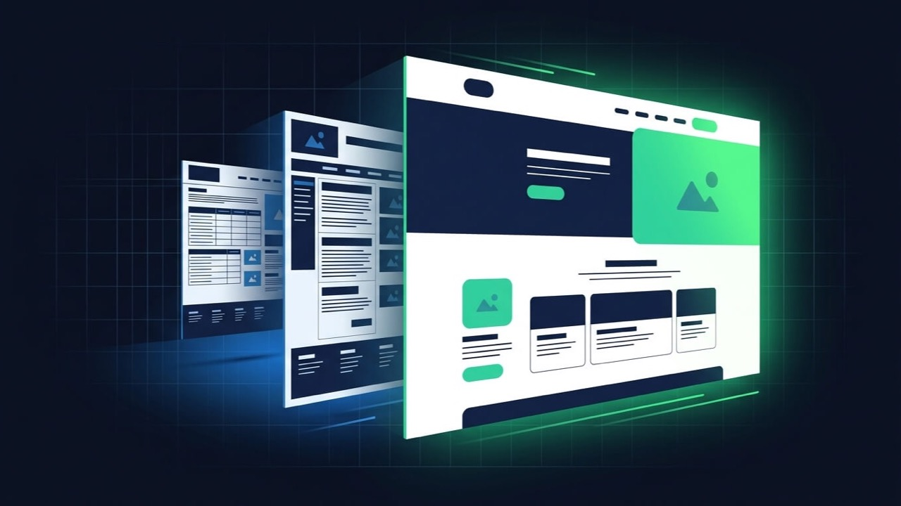

The site visibly looks dated
Visitors judge credibility from design in seconds — a site that looks like it’s from years ago costs trust before anyone reads a word of content.
Your current site earned its rankings, its traffic and whatever content actually performs — a redesign shouldn’t throw that away to fix a dated look and a slow load. I audit what’s working first, then rebuild around it.
THE PROBLEM
A redesign usually starts as a design conversation — the site looks dated, it doesn’t convert, it needs to feel current — and the SEO consequences only get considered after launch, when traffic has already dropped. By then the damage is a cleanup job instead of something that was simply never going to happen.
SIGNS YOU NEED THIS
Not every problem needs a full redesign — these are the signs it genuinely does.
Visitors judge credibility from design in seconds — a site that looks like it’s from years ago costs trust before anyone reads a word of content.
Visitors are arriving and leaving without acting — a structural and design problem, not a content or SEO one.
A desktop-first site adapted awkwardly for mobile is a different, harder problem than one designed mobile-first from the start.
An outdated theme, page builder, or custom code that makes ordinary updates disproportionately difficult is a sign the foundation itself needs replacing, not just its surface.
SCOPE

PROCESS
Rankings, traffic by page, and current Core Web Vitals get documented before anything changes, so there's a real baseline to protect and measure against.
Content and URLs that are already working get preserved deliberately; the design, speed and structural problems get named specifically, not treated as one big rebuild.
The new site is built on a private copy while the current one keeps running for visitors, so there's no live-site risk during the build itself.
Where a URL genuinely needs to change, it gets a specific, tested 301 redirect — never a blanket rule.
Image formats, caching and Core Web Vitals get addressed during the build, not as a follow-up project after launch.
Updated sitemaps go to Search Console immediately, so Google starts re-crawling the new structure right away.
The weeks after launch get watched specifically, so any real drop is caught and addressed early, not discovered months later.
A walkthrough so your team can publish, edit and maintain the new site without needing a developer for routine changes.
BENEFITS
Redesign work sits at the exact intersection of the two things eleven years of freelance work has been about: getting the design right, and understanding what it costs technically to get there without breaking what already works.
Because they're audited and protected deliberately, not discovered as collateral damage after launch.
Whatever was named upfront — conversion, mobile, speed, credibility — not just a fresh coat of paint.
A recorded handover means your team can run it day to day, not wait on a developer for routine changes.
RELEVANT WORK
Each of these is written up as a full case study — the problem, the approach, the stack and the outcome.
A full visual and structural redesign where existing content and search visibility carried over intact.
A dated portfolio site rebuilt around conversion and booking, without losing the audience it had already built.
FAQ
What people ask before committing to a redesign.
It can, and it's one of the most common ways a redesign backfires — usually from URLs changing without redirects, content being rewritten in a way that drops the terms it was ranking for, or the new site launching slower than the old one. None of that is inevitable; it's what the SEO-safe part of this service is specifically built to prevent.
Not necessarily, but if they change, every one gets a proper 301 redirect mapped individually, the same way a domain migration would handle it. Keeping URLs unchanged where possible is simply the lowest-risk option, not a hard requirement.
By auditing what the current site is doing first: which pages rank, which convert, which content is actually read. The redesign targets the specific things that are failing — an outdated design, a slow load, a confusing structure — rather than treating the whole site as disposable by default.
Customization covers smaller, targeted changes to an existing design — a new section, a theme adjustment, a Divi or Elementor edit. A redesign is a broader visual and structural overhaul of the site, and carries the SEO-preservation considerations that come with changing more at once.
Yes. The new design gets built on a staging copy while the current site keeps running normally for visitors, and the switch happens at launch, not gradually mid-build.
Not a problem — a redesign can also mean moving from one platform to another (WordPress, Webflow, a custom build), which changes the technical approach but not the SEO-preservation principles: audit first, map every URL, measure before and after.
It depends entirely on scope — page count, content volume, integrations — the same variables that drive any web project's timeline. A written timeline comes with the fixed quote after the initial audit, not before. See current starting prices for a reference point.
Available for new projects
NEXT STEP
Based in Bangladesh, working with clients worldwide. Share the current site and what’s bothering you about it — every serious enquiry gets a reply within one working day.
ALSO WORTH READING